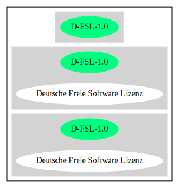

Key |
Value |
|---|---|
Fullname |
Deutsche Freie Software Lizenz |
Shortname |
D-FSL-1.0 |
Rating |
Unknown, probably Attention or Stop or No-Go |
Classification |
Copyleft |
Other Names:
scancode://d-fsl-1.0-de
“Per SPDX.org, this license was created for and is backed by the German state. The English translation can be found here http://www.dipp.nrw.de/d-fsl/index_html/lizenzen/en/D-FSL-1_0_en.txt ” (source: Scancode)
Homepage: http://www.dipp.nrw.de/d-fsl/index_html/lizenzen/de/D-FSL-1_0_de.txt
SPDX: http://spdx.org/licenses/D-FSL-1.0.json
http://www.dipp.nrw.de/d-fsl/lizenzen/
http://www.dipp.nrw.de/d-fsl/index_html/lizenzen/en/D-FSL-1_0_en.txt
https://www.hbz-nrw.de/produkte/open-access/lizenzen/dfsl
https://www.hbz-nrw.de/produkte/open-access/lizenzen/dfsl/deutsche-freie-software-lizenz
https://www.hbz-nrw.de/produkte/open-access/lizenzen/dfsl/german-free-software-license
https://www.hbz-nrw.de/produkte/open-access/lizenzen/dfsl/D-FSL-1_0_de.txt/at_download/file
https://www.hbz-nrw.de/produkte/open-access/lizenzen/dfsl/D-FSL-1_0_en.txt/at_download/file
http://www.dipp.nrw.de/d-fsl/nutzer/
Deutsche Freie Software Lizenz
(c) Ministerium für Wissenschaft und Forschung
Nordrhein-Westfalen 2004
Erstellt von Axel Metzger und Till Jaeger,
Institut für Rechtsfragen der Freien und Open
Source Software - <http://www.ifross.de>.
Präambel
Software ist mehr als ein Wirtschaftsgut. Sie ist
die technische Grundlage der
Informationsgesellschaft. Die Frage der Teilhabe
der Allgemeinheit ist deswegen von besonderer
Bedeutung. Herkömmlich lizenzierte Programme
werden nur im Object Code vertrieben, der Nutzer
darf das Programm weder verändern noch
weitergeben. Das Lizenzmodell der Freien Software
(synonym "Open Source Software") gewährt Ihnen
dagegen umfassende Freiheiten im Umgang mit dem
Programm. Die Deutsche Freie Software Lizenz
folgt diesem Lizenzmodell. Sie gewährt Ihnen das
Recht, das Programm in umfassender Weise zu
nutzen. Es ist Ihnen gestattet, das Programm nach
Ihren Vorstellungen zu verändern, in veränderter
oder unveränderter Form zu vervielfältigen, zu
verbreiten und öffentlich zugänglich zu machen.
Diese Rechte werden unentgeltlich eingeräumt.
Die Deutsche Freie Software Lizenz verbindet die
Rechtseinräumung allerdings mit Pflichten, die
dem Zweck dienen, das freie Zirkulieren des
Programms und aller veröffentlichten
Fortentwicklungen zu sichern. Wenn Sie das
Programm verbreiten oder öffentlich zugänglich
machen, dann müssen Sie jedem, der das Programm
von Ihnen erhält, eine Kopie dieser Lizenz
mitliefern und den Zugriff auf den Source Code
ermöglichen. Eine weitere Pflicht betrifft
Fortentwicklungen des Programms. Änderungen am
Programm, die Sie öffentlich verbreiten oder
zugänglich machen, müssen nach den Bestimmungen
dieser Lizenz frei gegeben werden.
Die Deutsche Freie Software Lizenz nimmt auf die
besonderen Anforderungen des deutschen und
europäischen Rechts Rücksicht. Sie ist
zweisprachig gestaltet und damit auch auf den
internationalen Vertrieb ausgerichtet.
§ 0 Definitionen
Dokumentation: Die Beschreibung des Aufbaus
und/oder der Struktur der Programmierung und/oder
der Funktionalitäten des Programms, unabhängig
davon, ob sie im Source Code oder gesondert
vorgenommen wird.
Lizenz: Die zwischen dem Lizenzgeber und Ihnen
geschlossene Vereinbarung mit dem Inhalt der
"Deutschen Freien Software Lizenz" bzw. das
Angebot hierzu.
Lizenznehmer: Jede natürliche oder juristische
Person, die die Lizenz angenommen hat.
Programm: Jedes Computerprogramm, das von den
Rechtsinhabern nach den Bestimmungen dieser
Lizenz verbreitet oder öffentlich zugänglich
gemacht worden ist.
Object Code: Die maschinenlesbare, übersetzte
Form des Programms.
Öffentlich: Nicht nur an einen bestimmten
Personenkreis gerichtet, der persönlich oder
durch die Zugehörigkeit zu einer juristischen
Person oder einem öffentlichen Träger miteinander
verbunden ist.
Öffentlich zugänglich machen: Die öffentliche
Weitergabe des Programms in unkörperlicher Form,
insbesondere das Bereithalten zum Download in
Datennetzen.
Rechtsinhaber: Der bzw. die Urheber oder
sonstigen Inhaber der ausschließlichen
Nutzungsrechte an dem Programm.
Source Code: Die für Menschen lesbare, in
Programmiersprache dargestellte Form des
Programms.
Verändern: Jede Erweiterung, Kürzung und
Bearbeitung des Programms, insbesondere
Weiterentwicklungen.
Verbreiten: Die öffentliche Weitergabe
körperlicher Vervielfältigungsstücke,
insbesondere auf Datenträgern oder in Verbindung
mit Hardware.
Vollständiger Source Code: Der Source Code in der
für die Erstellung bzw. die Bearbeitung benutzten
Form zusammen mit den zur Übersetzung und
Installation erforderlichen Konfigurationsdateien
und Software-Werkzeugen, sofern diese in der
benötigten Form nicht allgemein gebräuchlich
(z.B. Standard-Kompiler) oder für jedermann
lizenzgebührenfrei im Internet abrufbar sind.
§ 1 Rechte
(1) Sie dürfen das Programm in unveränderter Form
vervielfältigen, verbreiten und öffentlich
zugänglich machen.
(2) Sie dürfen das Programm verändern und
entsprechend veränderte Versionen
vervielfältigen, verbreiten und öffentlich
zugänglich machen. Gestattet ist auch die
Kombination des Programms oder Teilen hiervon mit
anderen Programmen.
(3) Sie erhalten die Rechte unentgeltlich.
§ 2 Pflichten beim Vertrieb
(1) Wenn Sie das Programm verbreiten oder
öffentlich zugänglich machen, sei es in
unveränderter oder veränderter Form, sei es in
einer Kombination mit anderen Programmen oder in
Verbindung mit Hardware, dann müssen sie
mitliefern:
1. alle Vermerke im Source Code und/oder Object
Code, die auf diese Lizenz hinweisen;
2. alle Vermerke im Source Code und/oder Object
Code, die über die Urheber des Programms Auskunft
geben;
3. einen für den Empfänger deutlich wahrnehmbaren
Hinweis auf diese Lizenz und die Internetadresse
<http://www.d-fsl.de>;
4. den vollständigen Text dieser Lizenz in
deutlich wahrnehmbarer Weise.
(2) Wenn bei der Installation des Programms
und/oder beim Programmstart Lizenz- und/oder
Vertragsbedingungen angezeigt werden, dann müssen
1. diese Lizenz,
2. ein Hinweis auf diese Lizenz und
3. ein Hinweis auf den oder die Rechtsinhaber an
den ersten unter dieser Lizenz nutzbaren
Programmbestandteilen
ebenfalls angezeigt werden.
(3) Sie dürfen die Nutzung des Programms nicht
von Pflichten oder Bedingungen abhängig machen,
die nicht in dieser Lizenz vorgesehen sind.
(4) Sofern Sie mit dem Programm eine
Dokumentation erhalten haben, muss diese
Dokumentation entsprechend mitgeliefert werden,
es sei denn, die freie Mitlieferung der
Dokumentation ist Ihnen aufgrund der Lizenz für
die Dokumentation nicht gestattet.
§ 3 Weitere Pflichten beim Vertrieb veränderter
Versionen
(1) Veränderte Versionen des Programms dürfen Sie
nur unter den Bedingungen dieser Lizenz
verbreiten oder öffentlich zugänglich machen, so
dass Dritte das veränderte Programm insgesamt
unter dieser Lizenz nutzen können.
(2) Wird das Programm oder ein Teil hiervon mit
einem anderen Programm kombiniert, gilt auch die
Kombination insgesamt als eine veränderte Version
des Programms, es sei denn, das andere Programm
ist formal und inhaltlich eigenständig. Ein
anderes Programm ist dann als eigenständig
anzusehen, wenn es die folgenden Voraussetzungen
alle erfüllt:
1. Der Source Code der kombinierten Programme
muss jeweils in eigenen Dateien vorhanden sein,
die keine Bestandteile des anderen Teils
enthalten, die über die zur Programmkombination
üblichen und erforderlichen Informationen über
den anderen Teil hinausgehen, wobei der Source
Code des anderen Programms nicht mitgeliefert
werden muss.
2. Der mit dem Programm kombinierte Teil muss
auch dann sinnvoll nutzbar sein, wenn er nicht
mit dem Programm kombiniert wird, und zwar
entweder alleine oder mit sonstigen Programmen.
Was als "sinnvoll nutzbar" anzusehen ist, richtet
sich nach der Auffassung der betroffenen
Fachkreise. Zu den betroffenen Fachkreisen
gehören alle Personen, die das Programm oder
Programme mit vergleichbarer Funktionalität
entwickeln, benutzen, verbreiten oder öffentlich
zugänglich machen.
(3) Wenn Sie das Programm oder einen Teil hiervon
- verändert oder unverändert - zusammen mit einem
anderen Programm verbreiten oder öffentlich
zugänglich machen, das unter der GNU General
Public License (GPL) lizenziert wird, darf das
Programm auch unter den Bedingungen der GPL
genutzt werden, sofern es mit dem anderen
Programm ein "derivative work" im Sinne der GPL
bildet. Dabei sollen die Hinweise auf diese
Lizenz entfernt und durch einen Hinweis auf die
GPL ersetzt werden. Ob bei der Zusammenstellung
ein "derivate work" im Sinne der GPL entsteht,
beurteilt sich nach Ziffer 2 b) der GPL. Diese
Bestimmung lautet: "You must cause any work that
you distribute or publish, that in whole or in
part contains or is derived from the Program or
any part thereof, to be licensed as a whole at no
charge to all third parties under the terms of
this License." Die GPL kann abgerufen werden
unter <http://www.fsf.org/licenses/gpl>.
(4) Wenn Sie das Programm in einer veränderten
Form verbreiten oder öffentlich zugänglich
machen, müssen Sie im Source Code einen Hinweis
mit den Änderungen aufnehmen und mit dem Datum
der Änderung versehen. Der Hinweis muss erkennen
lassen, welche Änderungen vorgenommen wurden und
bestehende Vermerke, die über die Urheber des
Programms Auskunft geben, übernehmen. Dies gilt
unabhängig davon, ob Sie einen eigenen
Urhebervermerk hinzufügen. Anstelle eines
Hinweises im Source Code können Sie auch ein
Versionskontrollsystem verwenden oder
weiterführen, sofern dieses mitverbreitet wird
oder öffentlich zugänglich ist.
(5) Sie dürfen von Dritten für die Einräumung
eines einfachen Nutzungsrechts an veränderten
Versionen des Programms kein Entgelt verlangen.
(6) Wenn Sie an der veränderten Version des
Programms ein anderes Schutzrecht als ein
Urheberrecht erwerben, insbesondere ein Patent
oder Gebrauchsmuster, lizenzieren Sie dieses
Schutzrecht für veränderte und unveränderte
Versionen des Programms in dem Umfang, der
erforderlich ist, um die Rechte aus dieser Lizenz
wahrnehmen zu können.
§ 4 Weitere Pflichten beim Vertrieb im Object
Code
(1) Wenn Sie das Programm nur im Object Code
verbreiten, dann müssen Sie zusätzlich zu den in
§ 2 und § 3 geregelten Pflichten entweder
1. den vollständigen Source Code im Internet
öffentlich zugänglich machen und bei der
Verbreitung des Object Codes deutlich auf die
vollständige Internetadresse hinweisen, unter der
der Source Code abgerufen werden kann oder
2. den vollständigen Source Code auf einem
hierfür üblichen Datenträger unter Beachtung der
§§ 2 und 3 mitverbreiten.
(2) Wenn Sie das Programm im Object Code
öffentlich zugänglich machen, dann müssen Sie
zusätzlich zu den in § 2 und § 3 geregelten
Pflichten den vollständigen Source Code im
Internet öffentlich zugänglich machen und dabei
deutlich auf die vollständige Internetadresse
hinweisen.
(3) Sofern Sie mit dem Programm eine
Dokumentation erhalten haben, muss diese
Dokumentation entsprechend der Absätze 1 und 2
mitgeliefert werden, es sei denn, die freie
Mitlieferung der Dokumentation ist Ihnen aufgrund
der Lizenz für die Dokumentation nicht gestattet.
§ 5 Vertragsschluss
(1) Mit dieser Lizenz wird Ihnen und jeder
anderen Person ein Angebot auf Abschluss eines
Vertrages über die Nutzung des Programms unter
den Bedingungen der Deutschen Freien
Softwarelizenz unterbreitet.
(2) Sie dürfen das Programm nach den jeweils
anwendbaren gesetzlichen Vorschriften
bestimmungsgemäß benutzen, ohne dass es der
Annahme dieser Lizenz bedarf. Dieses Recht
umfasst in der Europäischen Union und in den
meisten anderen Rechtsordnungen insbesondere die
folgenden Befugnisse:
1. das Programm ablaufen zu lassen sowie die
Erstellung von hierfür erforderlichen
Vervielfältigungen im Haupt- und Arbeitsspeicher;
2. das Erstellen einer Sicherungskopie;
3. die Fehlerberichtigung;
4. die Weitergabe einer rechtmäßig erworbenen
körperlichen Kopie des Programms.
(3) Sie erklären Ihre Zustimmung zum Abschluss
dieser Lizenz, indem Sie das Programm verbreiten,
öffentlich zugänglich machen, verändern oder in
einer Weise vervielfältigen, die über die
bestimmungsgemäße Nutzung im Sinne von Absatz 2
hinausgeht. Ab diesem Zeitpunkt ist diese Lizenz
als rechtlich verbindlicher Vertrag zwischen den
Rechtsinhabern und Ihnen geschlossen, ohne dass
es eines Zugangs der Annahmeerklärung bei den
Rechtsinhabern bedarf.
(4) Sie und jeder andere Lizenznehmer erhalten
die Rechte aus dieser Lizenz direkt von den
Rechtsinhabern. Eine Unterlizenzierung oder
Übertragung der Rechte ist nicht gestattet.
§ 6 Beendigung der Rechte bei Zuwiderhandlung
(1) Jede Verletzung Ihrer Verpflichtungen aus
dieser Lizenz führt zu einer automatischen
Beendigung Ihrer Rechte aus dieser Lizenz.
(2) Die Rechte Dritter, die das Programm oder
Rechte an dem Programm von Ihnen erhalten haben,
bleiben hiervon unberührt.
§ 7 Haftung und Gewährleistung
(1) Für entgegenstehende Rechte Dritter haften
die Rechtsinhaber nur, sofern sie Kenntnis von
diesen Rechten hatten, ohne Sie zu informieren.
(2) Die Haftung für Fehler und sonstige Mängel
des Programms richtet sich nach den außerhalb
dieser Lizenz getroffenen Vereinbarungen zwischen
Ihnen und den Rechtsinhabern oder, wenn eine
solche Vereinbarung nicht existiert, nach den
gesetzlichen Regelungen.
§ 8 Verträge mit Dritten
(1) Diese Lizenz regelt nur die Beziehung
zwischen Ihnen und den Rechtsinhabern. Sie ist
nicht Bestandteil der Verträge zwischen Ihnen und
Dritten.
(2) Die Lizenz beschränkt Sie nicht in der
Freiheit, mit Dritten, die von Ihnen Kopien des
Programms erhalten oder Leistungen in Anspruch
nehmen, die im Zusammenhang mit dem Programm
stehen, Verträge beliebigen Inhalts zu schließen,
sofern Sie dabei Ihren Verpflichtungen aus dieser
Lizenz nachkommen und die Rechte der Dritten aus
dieser Lizenz nicht beeinträchtigt werden.
Insbesondere dürfen Sie für die Überlassung des
Programms oder sonstige Leistungen ein Entgelt
verlangen.
(3) Diese Lizenz verpflichtet Sie nicht, das
Programm an Dritte weiterzugeben. Es steht Ihnen
frei zu entscheiden, wem Sie das Programm
zugänglich machen. Sie dürfen aber die weitere
Nutzung durch Dritte nicht durch den Einsatz
technischer Schutzmaßnahmen, insbesondere durch
den Einsatz von Kopierschutzvorrichtungen
jeglicher Art, verhindern oder erschweren. Eine
passwortgeschützte Zugangsbeschränkung oder die
Nutzung in einem Intranet wird nicht als
technische Schutzmaßnahme angesehen.
§ 9 Text der Lizenz
(1) Diese Lizenz ist in deutscher und englischer
Sprache abgefasst. Beide Fassungen sind gleich
verbindlich. Es wird unterstellt, dass die in der
Lizenz verwandten Begriffe in beiden Fassungen
dieselbe Bedeutung haben. Ergeben sich dennoch
Unterschiede, so ist die Bedeutung maßgeblich,
welche die Fassungen unter Berücksichtigung des
Ziels und Zwecks der Lizenz am besten miteinander
in Einklang bringt.
(2) Der Lizenzrat der Deutschen Freien Software
Lizenz kann mit verbindlicher Wirkung neue
Versionen der Lizenz in Kraft setzen, soweit
dies erforderlich und zumutbar ist. Neue
Versionen der Lizenz werden auf der Internetseite
<http://www.d-fsl.de> mit einer eindeutigen
Versionsnummer veröffentlicht. Die neue Version
der Lizenz erlangt für Sie verbindliche Wirkung,
wenn Sie von deren Veröffentlichung Kenntnis
genommen haben. Gesetzliche Rechtsbehelfe gegen
die Änderung der Lizenz werden durch die
vorstehenden Bestimmungen nicht beschränkt.
(3) Sie dürfen diese Lizenz in unveränderter Form
vervielfältigen, verbreiten und öffentlich
zugänglich machen.
§ 10 Anwendbares Recht
Auf diese Lizenz findet deutsches Recht
Anwendung.
Anhang: Wie unterstellen Sie ein Programm der
Deutschen Freien Software Lizenz?
Um jedermann den Abschluss dieser Lizenz zu
ermöglichen, wird empfohlen, das Programm mit
folgendem Hinweis auf die Lizenz zu versehen:
"Copyright (C) 20[jj] [Name des Rechtsinhabers].
Dieses Programm kann durch jedermann gemäß den
Bestimmungen der Deutschen Freien Software Lizenz
genutzt werden.
Die Lizenz kann unter <http://www.d-fsl.de>
abgerufen werden."{
"__impliedNames": [
"D-FSL-1.0",
"Deutsche Freie Software Lizenz",
"scancode://d-fsl-1.0-de"
],
"__impliedId": "D-FSL-1.0",
"__impliedComments": [
[
"Scancode",
[
"Per SPDX.org, this license was created for and is backed by the German\nstate. The English translation can be found here\nhttp://www.dipp.nrw.de/d-fsl/index_html/lizenzen/en/D-FSL-1_0_en.txt\n"
]
]
],
"facts": {
"SPDX": {
"isSPDXLicenseDeprecated": false,
"spdxFullName": "Deutsche Freie Software Lizenz",
"spdxDetailsURL": "http://spdx.org/licenses/D-FSL-1.0.json",
"_sourceURL": "https://spdx.org/licenses/D-FSL-1.0.html",
"spdxLicIsOSIApproved": false,
"spdxSeeAlso": [
"http://www.dipp.nrw.de/d-fsl/lizenzen/",
"http://www.dipp.nrw.de/d-fsl/index_html/lizenzen/de/D-FSL-1_0_de.txt",
"http://www.dipp.nrw.de/d-fsl/index_html/lizenzen/en/D-FSL-1_0_en.txt",
"https://www.hbz-nrw.de/produkte/open-access/lizenzen/dfsl",
"https://www.hbz-nrw.de/produkte/open-access/lizenzen/dfsl/deutsche-freie-software-lizenz",
"https://www.hbz-nrw.de/produkte/open-access/lizenzen/dfsl/german-free-software-license",
"https://www.hbz-nrw.de/produkte/open-access/lizenzen/dfsl/D-FSL-1_0_de.txt/at_download/file",
"https://www.hbz-nrw.de/produkte/open-access/lizenzen/dfsl/D-FSL-1_0_en.txt/at_download/file"
],
"_implications": {
"__impliedNames": [
"D-FSL-1.0",
"Deutsche Freie Software Lizenz"
],
"__impliedId": "D-FSL-1.0",
"__isOsiApproved": false,
"__impliedURLs": [
[
"SPDX",
"http://spdx.org/licenses/D-FSL-1.0.json"
],
[
null,
"http://www.dipp.nrw.de/d-fsl/lizenzen/"
],
[
null,
"http://www.dipp.nrw.de/d-fsl/index_html/lizenzen/de/D-FSL-1_0_de.txt"
],
[
null,
"http://www.dipp.nrw.de/d-fsl/index_html/lizenzen/en/D-FSL-1_0_en.txt"
],
[
null,
"https://www.hbz-nrw.de/produkte/open-access/lizenzen/dfsl"
],
[
null,
"https://www.hbz-nrw.de/produkte/open-access/lizenzen/dfsl/deutsche-freie-software-lizenz"
],
[
null,
"https://www.hbz-nrw.de/produkte/open-access/lizenzen/dfsl/german-free-software-license"
],
[
null,
"https://www.hbz-nrw.de/produkte/open-access/lizenzen/dfsl/D-FSL-1_0_de.txt/at_download/file"
],
[
null,
"https://www.hbz-nrw.de/produkte/open-access/lizenzen/dfsl/D-FSL-1_0_en.txt/at_download/file"
]
]
},
"spdxLicenseId": "D-FSL-1.0"
},
"Scancode": {
"otherUrls": [
"http://www.dipp.nrw.de/d-fsl/index_html/lizenzen/en/D-FSL-1_0_en.txt",
"http://www.dipp.nrw.de/d-fsl/lizenzen/",
"http://www.dipp.nrw.de/d-fsl/nutzer/",
"https://www.hbz-nrw.de/produkte/open-access/lizenzen/dfsl",
"https://www.hbz-nrw.de/produkte/open-access/lizenzen/dfsl/D-FSL-1_0_de.txt/at_download/file",
"https://www.hbz-nrw.de/produkte/open-access/lizenzen/dfsl/D-FSL-1_0_en.txt/at_download/file",
"https://www.hbz-nrw.de/produkte/open-access/lizenzen/dfsl/deutsche-freie-software-lizenz",
"https://www.hbz-nrw.de/produkte/open-access/lizenzen/dfsl/german-free-software-license"
],
"homepageUrl": "http://www.dipp.nrw.de/d-fsl/index_html/lizenzen/de/D-FSL-1_0_de.txt",
"shortName": "Deutsche Freie Software Lizenz",
"textUrls": null,
"text": "Deutsche Freie Software Lizenz\n\n(c) Ministerium für Wissenschaft und Forschung \nNordrhein-Westfalen 2004\n\nErstellt von Axel Metzger und Till Jaeger, \nInstitut für Rechtsfragen der Freien und Open \nSource Software - <http://www.ifross.de>.\n\nPräambel\n\nSoftware ist mehr als ein Wirtschaftsgut. Sie ist \ndie technische Grundlage der \nInformationsgesellschaft. Die Frage der Teilhabe \nder Allgemeinheit ist deswegen von besonderer \nBedeutung. Herkömmlich lizenzierte Programme \nwerden nur im Object Code vertrieben, der Nutzer \ndarf das Programm weder verändern noch \nweitergeben. Das Lizenzmodell der Freien Software \n(synonym \"Open Source Software\") gewährt Ihnen \ndagegen umfassende Freiheiten im Umgang mit dem \nProgramm. Die Deutsche Freie Software Lizenz \nfolgt diesem Lizenzmodell. Sie gewährt Ihnen das \nRecht, das Programm in umfassender Weise zu \nnutzen. Es ist Ihnen gestattet, das Programm nach \nIhren Vorstellungen zu verändern, in veränderter \noder unveränderter Form zu vervielfältigen, zu \nverbreiten und öffentlich zugänglich zu machen. \nDiese Rechte werden unentgeltlich eingeräumt. \n\nDie Deutsche Freie Software Lizenz verbindet die \nRechtseinräumung allerdings mit Pflichten, die \ndem Zweck dienen, das freie Zirkulieren des \nProgramms und aller veröffentlichten \nFortentwicklungen zu sichern. Wenn Sie das \nProgramm verbreiten oder öffentlich zugänglich \nmachen, dann müssen Sie jedem, der das Programm \nvon Ihnen erhält, eine Kopie dieser Lizenz \nmitliefern und den Zugriff auf den Source Code \nermöglichen. Eine weitere Pflicht betrifft \nFortentwicklungen des Programms. ÃÂnderungen am \nProgramm, die Sie öffentlich verbreiten oder \nzugänglich machen, müssen nach den Bestimmungen \ndieser Lizenz frei gegeben werden. \n\nDie Deutsche Freie Software Lizenz nimmt auf die \nbesonderen Anforderungen des deutschen und \neuropäischen Rechts Rücksicht. Sie ist \nzweisprachig gestaltet und damit auch auf den \ninternationalen Vertrieb ausgerichtet. \n\n\nç 0 Definitionen\n\nDokumentation: Die Beschreibung des Aufbaus \nund/oder der Struktur der Programmierung und/oder \nder Funktionalitäten des Programms, unabhängig \ndavon, ob sie im Source Code oder gesondert \nvorgenommen wird.\n\nLizenz: Die zwischen dem Lizenzgeber und Ihnen \ngeschlossene Vereinbarung mit dem Inhalt der \n\"Deutschen Freien Software Lizenz\" bzw. das \nAngebot hierzu. \n\nLizenznehmer: Jede natürliche oder juristische \nPerson, die die Lizenz angenommen hat.\n\nProgramm: Jedes Computerprogramm, das von den \nRechtsinhabern nach den Bestimmungen dieser \nLizenz verbreitet oder öffentlich zugänglich \ngemacht worden ist.\n\nObject Code: Die maschinenlesbare, übersetzte \nForm des Programms.\n\nÃÂffentlich: Nicht nur an einen bestimmten \nPersonenkreis gerichtet, der persönlich oder \ndurch die Zugehörigkeit zu einer juristischen \nPerson oder einem öffentlichen Träger miteinander \nverbunden ist.\n\nÃÂffentlich zugänglich machen: Die öffentliche \nWeitergabe des Programms in unkörperlicher Form, \ninsbesondere das Bereithalten zum Download in \nDatennetzen. \n\nRechtsinhaber: Der bzw. die Urheber oder \nsonstigen Inhaber der ausschlieÃÂlichen \nNutzungsrechte an dem Programm.\n\nSource Code: Die für Menschen lesbare, in \nProgrammiersprache dargestellte Form des \nProgramms.\n\nVerändern: Jede Erweiterung, Kürzung und \nBearbeitung des Programms, insbesondere \nWeiterentwicklungen.\n\nVerbreiten: Die öffentliche Weitergabe \nkörperlicher Vervielfältigungsstücke, \ninsbesondere auf Datenträgern oder in Verbindung \nmit Hardware. \n\nVollständiger Source Code: Der Source Code in der \nfür die Erstellung bzw. die Bearbeitung benutzten \nForm zusammen mit den zur ÃÂbersetzung und \nInstallation erforderlichen Konfigurationsdateien \nund Software-Werkzeugen, sofern diese in der \nbenötigten Form nicht allgemein gebräuchlich \n(z.B. Standard-Kompiler) oder für jedermann \nlizenzgebührenfrei im Internet abrufbar sind.\n\n\nç 1 Rechte\n\n(1) Sie dürfen das Programm in unveränderter Form \nvervielfältigen, verbreiten und öffentlich \nzugänglich machen. \n\n(2) Sie dürfen das Programm verändern und \nentsprechend veränderte Versionen \nvervielfältigen, verbreiten und öffentlich \nzugänglich machen. Gestattet ist auch die \nKombination des Programms oder Teilen hiervon mit \nanderen Programmen. \n\n(3) Sie erhalten die Rechte unentgeltlich.\n\n\nç 2 Pflichten beim Vertrieb\n\n(1) Wenn Sie das Programm verbreiten oder \nöffentlich zugänglich machen, sei es in \nunveränderter oder veränderter Form, sei es in \neiner Kombination mit anderen Programmen oder in \nVerbindung mit Hardware, dann müssen sie \nmitliefern:\n\n1. alle Vermerke im Source Code und/oder Object \nCode, die auf diese Lizenz hinweisen;\n \n2. alle Vermerke im Source Code und/oder Object \nCode, die über die Urheber des Programms Auskunft \ngeben;\n\n3. einen für den Empfänger deutlich wahrnehmbaren \nHinweis auf diese Lizenz und die Internetadresse \n<http://www.d-fsl.de>; \n\n4. den vollständigen Text dieser Lizenz in \ndeutlich wahrnehmbarer Weise.\n\n(2) Wenn bei der Installation des Programms \nund/oder beim Programmstart Lizenz- und/oder \nVertragsbedingungen angezeigt werden, dann müssen\n\n1. diese Lizenz,\n\n2. ein Hinweis auf diese Lizenz und\n\n3. ein Hinweis auf den oder die Rechtsinhaber an \nden ersten unter dieser Lizenz nutzbaren \nProgrammbestandteilen \n\nebenfalls angezeigt werden. \n\n(3) Sie dürfen die Nutzung des Programms nicht \nvon Pflichten oder Bedingungen abhängig machen, \ndie nicht in dieser Lizenz vorgesehen sind. \n\n(4) Sofern Sie mit dem Programm eine \nDokumentation erhalten haben, muss diese \nDokumentation entsprechend mitgeliefert werden, \nes sei denn, die freie Mitlieferung der \nDokumentation ist Ihnen aufgrund der Lizenz für \ndie Dokumentation nicht gestattet.\n\n\nç 3 Weitere Pflichten beim Vertrieb veränderter \nVersionen \n\n(1) Veränderte Versionen des Programms dürfen Sie \nnur unter den Bedingungen dieser Lizenz \nverbreiten oder öffentlich zugänglich machen, so \ndass Dritte das veränderte Programm insgesamt \nunter dieser Lizenz nutzen können. \n\n(2) Wird das Programm oder ein Teil hiervon mit \neinem anderen Programm kombiniert, gilt auch die \nKombination insgesamt als eine veränderte Version \ndes Programms, es sei denn, das andere Programm \nist formal und inhaltlich eigenständig. Ein \nanderes Programm ist dann als eigenständig \nanzusehen, wenn es die folgenden Voraussetzungen \nalle erfüllt:\n\n1. Der Source Code der kombinierten Programme \nmuss jeweils in eigenen Dateien vorhanden sein, \ndie keine Bestandteile des anderen Teils \nenthalten, die über die zur Programmkombination \nüblichen und erforderlichen Informationen über \nden anderen Teil hinausgehen, wobei der Source \nCode des anderen Programms nicht mitgeliefert \nwerden muss.\n\n2. Der mit dem Programm kombinierte Teil muss \nauch dann sinnvoll nutzbar sein, wenn er nicht \nmit dem Programm kombiniert wird, und zwar \nentweder alleine oder mit sonstigen Programmen. \nWas als \"sinnvoll nutzbar\" anzusehen ist, richtet \nsich nach der Auffassung der betroffenen \nFachkreise. Zu den betroffenen Fachkreisen \ngehören alle Personen, die das Programm oder \nProgramme mit vergleichbarer Funktionalität \nentwickeln, benutzen, verbreiten oder öffentlich \nzugänglich machen.\n\n(3) Wenn Sie das Programm oder einen Teil hiervon \n- verändert oder unverändert - zusammen mit einem \nanderen Programm verbreiten oder öffentlich \nzugänglich machen, das unter der GNU General \nPublic License (GPL) lizenziert wird, darf das \nProgramm auch unter den Bedingungen der GPL \ngenutzt werden, sofern es mit dem anderen \nProgramm ein \"derivative work\" im Sinne der GPL \nbildet. Dabei sollen die Hinweise auf diese \nLizenz entfernt und durch einen Hinweis auf die \nGPL ersetzt werden. Ob bei der Zusammenstellung \nein \"derivate work\" im Sinne der GPL entsteht, \nbeurteilt sich nach Ziffer 2 b) der GPL. Diese \nBestimmung lautet: \"You must cause any work that \nyou distribute or publish, that in whole or in \npart contains or is derived from the Program or \nany part thereof, to be licensed as a whole at no \ncharge to all third parties under the terms of \nthis License.\" Die GPL kann abgerufen werden \nunter <http://www.fsf.org/licenses/gpl>.\n\n(4) Wenn Sie das Programm in einer veränderten \nForm verbreiten oder öffentlich zugänglich \nmachen, müssen Sie im Source Code einen Hinweis \nmit den ÃÂnderungen aufnehmen und mit dem Datum \nder ÃÂnderung versehen. Der Hinweis muss erkennen \nlassen, welche ÃÂnderungen vorgenommen wurden und \nbestehende Vermerke, die über die Urheber des \nProgramms Auskunft geben, übernehmen. Dies gilt \nunabhängig davon, ob Sie einen eigenen \nUrhebervermerk hinzufügen. Anstelle eines \nHinweises im Source Code können Sie auch ein \nVersionskontrollsystem verwenden oder \nweiterführen, sofern dieses mitverbreitet wird \noder öffentlich zugänglich ist.\n\n(5) Sie dürfen von Dritten für die Einräumung \neines einfachen Nutzungsrechts an veränderten \nVersionen des Programms kein Entgelt verlangen.\n\n(6) Wenn Sie an der veränderten Version des \nProgramms ein anderes Schutzrecht als ein \nUrheberrecht erwerben, insbesondere ein Patent \noder Gebrauchsmuster, lizenzieren Sie dieses \nSchutzrecht für veränderte und unveränderte \nVersionen des Programms in dem Umfang, der \nerforderlich ist, um die Rechte aus dieser Lizenz \nwahrnehmen zu können. \n\n\nç 4 Weitere Pflichten beim Vertrieb im Object \nCode\n\n(1) Wenn Sie das Programm nur im Object Code \nverbreiten, dann müssen Sie zusätzlich zu den in \nç 2 und ç 3 geregelten Pflichten entweder \n\n1. den vollständigen Source Code im Internet \nöffentlich zugänglich machen und bei der \nVerbreitung des Object Codes deutlich auf die \nvollständige Internetadresse hinweisen, unter der \nder Source Code abgerufen werden kann oder \n\n2. den vollständigen Source Code auf einem \nhierfür üblichen Datenträger unter Beachtung der \nçç 2 und 3 mitverbreiten.\n\n(2) Wenn Sie das Programm im Object Code \nöffentlich zugänglich machen, dann müssen Sie \nzusätzlich zu den in ç 2 und ç 3 geregelten \nPflichten den vollständigen Source Code im \nInternet öffentlich zugänglich machen und dabei \ndeutlich auf die vollständige Internetadresse \nhinweisen.\n\n(3) Sofern Sie mit dem Programm eine \nDokumentation erhalten haben, muss diese \nDokumentation entsprechend der Absätze 1 und 2 \nmitgeliefert werden, es sei denn, die freie \nMitlieferung der Dokumentation ist Ihnen aufgrund \nder Lizenz für die Dokumentation nicht gestattet.\n\n\nç 5 Vertragsschluss\n\n(1) Mit dieser Lizenz wird Ihnen und jeder \nanderen Person ein Angebot auf Abschluss eines \nVertrages über die Nutzung des Programms unter \nden Bedingungen der Deutschen Freien \nSoftwarelizenz unterbreitet.\n\n(2) Sie dürfen das Programm nach den jeweils \nanwendbaren gesetzlichen Vorschriften \nbestimmungsgemäàbenutzen, ohne dass es der \nAnnahme dieser Lizenz bedarf. Dieses Recht \numfasst in der Europäischen Union und in den \nmeisten anderen Rechtsordnungen insbesondere die \nfolgenden Befugnisse: \n\n1. das Programm ablaufen zu lassen sowie die \nErstellung von hierfür erforderlichen \nVervielfältigungen im Haupt- und Arbeitsspeicher; \n\n2. das Erstellen einer Sicherungskopie; \n\n3. die Fehlerberichtigung; \n\n4. die Weitergabe einer rechtmäÃÂig erworbenen \nkörperlichen Kopie des Programms.\n \n(3) Sie erklären Ihre Zustimmung zum Abschluss \ndieser Lizenz, indem Sie das Programm verbreiten, \nöffentlich zugänglich machen, verändern oder in \neiner Weise vervielfältigen, die über die \nbestimmungsgemäÃÂe Nutzung im Sinne von Absatz 2 \nhinausgeht. Ab diesem Zeitpunkt ist diese Lizenz \nals rechtlich verbindlicher Vertrag zwischen den \nRechtsinhabern und Ihnen geschlossen, ohne dass \nes eines Zugangs der Annahmeerklärung bei den \nRechtsinhabern bedarf.\n\n(4) Sie und jeder andere Lizenznehmer erhalten \ndie Rechte aus dieser Lizenz direkt von den \nRechtsinhabern. Eine Unterlizenzierung oder \nÃÂbertragung der Rechte ist nicht gestattet.\n \n\nç 6 Beendigung der Rechte bei Zuwiderhandlung\n\n(1) Jede Verletzung Ihrer Verpflichtungen aus \ndieser Lizenz führt zu einer automatischen \nBeendigung Ihrer Rechte aus dieser Lizenz. \n\n(2) Die Rechte Dritter, die das Programm oder \nRechte an dem Programm von Ihnen erhalten haben, \nbleiben hiervon unberührt.\n\n\nç 7 Haftung und Gewährleistung\n\n(1) Für entgegenstehende Rechte Dritter haften \ndie Rechtsinhaber nur, sofern sie Kenntnis von \ndiesen Rechten hatten, ohne Sie zu informieren.\n\n(2) Die Haftung für Fehler und sonstige Mängel \ndes Programms richtet sich nach den auÃÂerhalb \ndieser Lizenz getroffenen Vereinbarungen zwischen \nIhnen und den Rechtsinhabern oder, wenn eine \nsolche Vereinbarung nicht existiert, nach den \ngesetzlichen Regelungen. \n\n\nç 8 Verträge mit Dritten\n\n(1) Diese Lizenz regelt nur die Beziehung \nzwischen Ihnen und den Rechtsinhabern. Sie ist \nnicht Bestandteil der Verträge zwischen Ihnen und \nDritten. \n\n(2) Die Lizenz beschränkt Sie nicht in der \nFreiheit, mit Dritten, die von Ihnen Kopien des \nProgramms erhalten oder Leistungen in Anspruch \nnehmen, die im Zusammenhang mit dem Programm \nstehen, Verträge beliebigen Inhalts zu schlieÃÂen, \nsofern Sie dabei Ihren Verpflichtungen aus dieser \nLizenz nachkommen und die Rechte der Dritten aus \ndieser Lizenz nicht beeinträchtigt werden. \nInsbesondere dürfen Sie für die ÃÂberlassung des \nProgramms oder sonstige Leistungen ein Entgelt \nverlangen. \n\n(3) Diese Lizenz verpflichtet Sie nicht, das \nProgramm an Dritte weiterzugeben. Es steht Ihnen \nfrei zu entscheiden, wem Sie das Programm \nzugänglich machen. Sie dürfen aber die weitere \nNutzung durch Dritte nicht durch den Einsatz \ntechnischer SchutzmaÃÂnahmen, insbesondere durch \nden Einsatz von Kopierschutzvorrichtungen \njeglicher Art, verhindern oder erschweren. Eine \npasswortgeschützte Zugangsbeschränkung oder die \nNutzung in einem Intranet wird nicht als \ntechnische SchutzmaÃÂnahme angesehen.\n\n\nç 9 Text der Lizenz\n\n(1) Diese Lizenz ist in deutscher und englischer \nSprache abgefasst. Beide Fassungen sind gleich \nverbindlich. Es wird unterstellt, dass die in der \nLizenz verwandten Begriffe in beiden Fassungen \ndieselbe Bedeutung haben. Ergeben sich dennoch \nUnterschiede, so ist die Bedeutung maÃÂgeblich, \nwelche die Fassungen unter Berücksichtigung des \nZiels und Zwecks der Lizenz am besten miteinander \nin Einklang bringt. \n\n(2) Der Lizenzrat der Deutschen Freien Software \nLizenz kann mit verbindlicher Wirkung neue \nVersionen der Lizenz in Kraft setzen, soweit \ndies erforderlich und zumutbar ist. Neue \nVersionen der Lizenz werden auf der Internetseite \n<http://www.d-fsl.de> mit einer eindeutigen \nVersionsnummer veröffentlicht. Die neue Version \nder Lizenz erlangt für Sie verbindliche Wirkung, \nwenn Sie von deren Veröffentlichung Kenntnis \ngenommen haben. Gesetzliche Rechtsbehelfe gegen \ndie ÃÂnderung der Lizenz werden durch die \nvorstehenden Bestimmungen nicht beschränkt. \n\n(3) Sie dürfen diese Lizenz in unveränderter Form \nvervielfältigen, verbreiten und öffentlich \nzugänglich machen.\n\n\nç 10 Anwendbares Recht\n\nAuf diese Lizenz findet deutsches Recht \nAnwendung.\n\n\nAnhang: Wie unterstellen Sie ein Programm der \nDeutschen Freien Software Lizenz?\n\nUm jedermann den Abschluss dieser Lizenz zu \nermöglichen, wird empfohlen, das Programm mit \nfolgendem Hinweis auf die Lizenz zu versehen:\n\n\"Copyright (C) 20[jj] [Name des Rechtsinhabers]. \n\nDieses Programm kann durch jedermann gemäàden \nBestimmungen der Deutschen Freien Software Lizenz \ngenutzt werden. \n\nDie Lizenz kann unter <http://www.d-fsl.de> \nabgerufen werden.\"",
"category": "Copyleft",
"osiUrl": null,
"owner": "Institute for Legal Issues On Free and Open Source Software",
"_sourceURL": "https://github.com/nexB/scancode-toolkit/blob/develop/src/licensedcode/data/licenses/d-fsl-1.0-de.yml",
"key": "d-fsl-1.0-de",
"name": "Deutsche Freie Software Lizenz",
"spdxId": "D-FSL-1.0",
"notes": "Per SPDX.org, this license was created for and is backed by the German\nstate. The English translation can be found here\nhttp://www.dipp.nrw.de/d-fsl/index_html/lizenzen/en/D-FSL-1_0_en.txt\n",
"_implications": {
"__impliedNames": [
"scancode://d-fsl-1.0-de",
"Deutsche Freie Software Lizenz",
"D-FSL-1.0"
],
"__impliedId": "D-FSL-1.0",
"__impliedComments": [
[
"Scancode",
[
"Per SPDX.org, this license was created for and is backed by the German\nstate. The English translation can be found here\nhttp://www.dipp.nrw.de/d-fsl/index_html/lizenzen/en/D-FSL-1_0_en.txt\n"
]
]
],
"__impliedCopyleft": [
[
"Scancode",
"Copyleft"
]
],
"__calculatedCopyleft": "Copyleft",
"__impliedText": "Deutsche Freie Software Lizenz\n\n(c) Ministerium für Wissenschaft und Forschung \nNordrhein-Westfalen 2004\n\nErstellt von Axel Metzger und Till Jaeger, \nInstitut für Rechtsfragen der Freien und Open \nSource Software - <http://www.ifross.de>.\n\nPräambel\n\nSoftware ist mehr als ein Wirtschaftsgut. Sie ist \ndie technische Grundlage der \nInformationsgesellschaft. Die Frage der Teilhabe \nder Allgemeinheit ist deswegen von besonderer \nBedeutung. Herkömmlich lizenzierte Programme \nwerden nur im Object Code vertrieben, der Nutzer \ndarf das Programm weder verändern noch \nweitergeben. Das Lizenzmodell der Freien Software \n(synonym \"Open Source Software\") gewährt Ihnen \ndagegen umfassende Freiheiten im Umgang mit dem \nProgramm. Die Deutsche Freie Software Lizenz \nfolgt diesem Lizenzmodell. Sie gewährt Ihnen das \nRecht, das Programm in umfassender Weise zu \nnutzen. Es ist Ihnen gestattet, das Programm nach \nIhren Vorstellungen zu verändern, in veränderter \noder unveränderter Form zu vervielfältigen, zu \nverbreiten und öffentlich zugänglich zu machen. \nDiese Rechte werden unentgeltlich eingeräumt. \n\nDie Deutsche Freie Software Lizenz verbindet die \nRechtseinräumung allerdings mit Pflichten, die \ndem Zweck dienen, das freie Zirkulieren des \nProgramms und aller veröffentlichten \nFortentwicklungen zu sichern. Wenn Sie das \nProgramm verbreiten oder öffentlich zugänglich \nmachen, dann müssen Sie jedem, der das Programm \nvon Ihnen erhält, eine Kopie dieser Lizenz \nmitliefern und den Zugriff auf den Source Code \nermöglichen. Eine weitere Pflicht betrifft \nFortentwicklungen des Programms. Ãnderungen am \nProgramm, die Sie öffentlich verbreiten oder \nzugänglich machen, müssen nach den Bestimmungen \ndieser Lizenz frei gegeben werden. \n\nDie Deutsche Freie Software Lizenz nimmt auf die \nbesonderen Anforderungen des deutschen und \neuropäischen Rechts Rücksicht. Sie ist \nzweisprachig gestaltet und damit auch auf den \ninternationalen Vertrieb ausgerichtet. \n\n\n§ 0 Definitionen\n\nDokumentation: Die Beschreibung des Aufbaus \nund/oder der Struktur der Programmierung und/oder \nder Funktionalitäten des Programms, unabhängig \ndavon, ob sie im Source Code oder gesondert \nvorgenommen wird.\n\nLizenz: Die zwischen dem Lizenzgeber und Ihnen \ngeschlossene Vereinbarung mit dem Inhalt der \n\"Deutschen Freien Software Lizenz\" bzw. das \nAngebot hierzu. \n\nLizenznehmer: Jede natürliche oder juristische \nPerson, die die Lizenz angenommen hat.\n\nProgramm: Jedes Computerprogramm, das von den \nRechtsinhabern nach den Bestimmungen dieser \nLizenz verbreitet oder öffentlich zugänglich \ngemacht worden ist.\n\nObject Code: Die maschinenlesbare, übersetzte \nForm des Programms.\n\nÃffentlich: Nicht nur an einen bestimmten \nPersonenkreis gerichtet, der persönlich oder \ndurch die Zugehörigkeit zu einer juristischen \nPerson oder einem öffentlichen Träger miteinander \nverbunden ist.\n\nÃffentlich zugänglich machen: Die öffentliche \nWeitergabe des Programms in unkörperlicher Form, \ninsbesondere das Bereithalten zum Download in \nDatennetzen. \n\nRechtsinhaber: Der bzw. die Urheber oder \nsonstigen Inhaber der ausschlieÃlichen \nNutzungsrechte an dem Programm.\n\nSource Code: Die für Menschen lesbare, in \nProgrammiersprache dargestellte Form des \nProgramms.\n\nVerändern: Jede Erweiterung, Kürzung und \nBearbeitung des Programms, insbesondere \nWeiterentwicklungen.\n\nVerbreiten: Die öffentliche Weitergabe \nkörperlicher Vervielfältigungsstücke, \ninsbesondere auf Datenträgern oder in Verbindung \nmit Hardware. \n\nVollständiger Source Code: Der Source Code in der \nfür die Erstellung bzw. die Bearbeitung benutzten \nForm zusammen mit den zur Ãbersetzung und \nInstallation erforderlichen Konfigurationsdateien \nund Software-Werkzeugen, sofern diese in der \nbenötigten Form nicht allgemein gebräuchlich \n(z.B. Standard-Kompiler) oder für jedermann \nlizenzgebührenfrei im Internet abrufbar sind.\n\n\n§ 1 Rechte\n\n(1) Sie dürfen das Programm in unveränderter Form \nvervielfältigen, verbreiten und öffentlich \nzugänglich machen. \n\n(2) Sie dürfen das Programm verändern und \nentsprechend veränderte Versionen \nvervielfältigen, verbreiten und öffentlich \nzugänglich machen. Gestattet ist auch die \nKombination des Programms oder Teilen hiervon mit \nanderen Programmen. \n\n(3) Sie erhalten die Rechte unentgeltlich.\n\n\n§ 2 Pflichten beim Vertrieb\n\n(1) Wenn Sie das Programm verbreiten oder \nöffentlich zugänglich machen, sei es in \nunveränderter oder veränderter Form, sei es in \neiner Kombination mit anderen Programmen oder in \nVerbindung mit Hardware, dann müssen sie \nmitliefern:\n\n1. alle Vermerke im Source Code und/oder Object \nCode, die auf diese Lizenz hinweisen;\n \n2. alle Vermerke im Source Code und/oder Object \nCode, die über die Urheber des Programms Auskunft \ngeben;\n\n3. einen für den Empfänger deutlich wahrnehmbaren \nHinweis auf diese Lizenz und die Internetadresse \n<http://www.d-fsl.de>; \n\n4. den vollständigen Text dieser Lizenz in \ndeutlich wahrnehmbarer Weise.\n\n(2) Wenn bei der Installation des Programms \nund/oder beim Programmstart Lizenz- und/oder \nVertragsbedingungen angezeigt werden, dann müssen\n\n1. diese Lizenz,\n\n2. ein Hinweis auf diese Lizenz und\n\n3. ein Hinweis auf den oder die Rechtsinhaber an \nden ersten unter dieser Lizenz nutzbaren \nProgrammbestandteilen \n\nebenfalls angezeigt werden. \n\n(3) Sie dürfen die Nutzung des Programms nicht \nvon Pflichten oder Bedingungen abhängig machen, \ndie nicht in dieser Lizenz vorgesehen sind. \n\n(4) Sofern Sie mit dem Programm eine \nDokumentation erhalten haben, muss diese \nDokumentation entsprechend mitgeliefert werden, \nes sei denn, die freie Mitlieferung der \nDokumentation ist Ihnen aufgrund der Lizenz für \ndie Dokumentation nicht gestattet.\n\n\n§ 3 Weitere Pflichten beim Vertrieb veränderter \nVersionen \n\n(1) Veränderte Versionen des Programms dürfen Sie \nnur unter den Bedingungen dieser Lizenz \nverbreiten oder öffentlich zugänglich machen, so \ndass Dritte das veränderte Programm insgesamt \nunter dieser Lizenz nutzen können. \n\n(2) Wird das Programm oder ein Teil hiervon mit \neinem anderen Programm kombiniert, gilt auch die \nKombination insgesamt als eine veränderte Version \ndes Programms, es sei denn, das andere Programm \nist formal und inhaltlich eigenständig. Ein \nanderes Programm ist dann als eigenständig \nanzusehen, wenn es die folgenden Voraussetzungen \nalle erfüllt:\n\n1. Der Source Code der kombinierten Programme \nmuss jeweils in eigenen Dateien vorhanden sein, \ndie keine Bestandteile des anderen Teils \nenthalten, die über die zur Programmkombination \nüblichen und erforderlichen Informationen über \nden anderen Teil hinausgehen, wobei der Source \nCode des anderen Programms nicht mitgeliefert \nwerden muss.\n\n2. Der mit dem Programm kombinierte Teil muss \nauch dann sinnvoll nutzbar sein, wenn er nicht \nmit dem Programm kombiniert wird, und zwar \nentweder alleine oder mit sonstigen Programmen. \nWas als \"sinnvoll nutzbar\" anzusehen ist, richtet \nsich nach der Auffassung der betroffenen \nFachkreise. Zu den betroffenen Fachkreisen \ngehören alle Personen, die das Programm oder \nProgramme mit vergleichbarer Funktionalität \nentwickeln, benutzen, verbreiten oder öffentlich \nzugänglich machen.\n\n(3) Wenn Sie das Programm oder einen Teil hiervon \n- verändert oder unverändert - zusammen mit einem \nanderen Programm verbreiten oder öffentlich \nzugänglich machen, das unter der GNU General \nPublic License (GPL) lizenziert wird, darf das \nProgramm auch unter den Bedingungen der GPL \ngenutzt werden, sofern es mit dem anderen \nProgramm ein \"derivative work\" im Sinne der GPL \nbildet. Dabei sollen die Hinweise auf diese \nLizenz entfernt und durch einen Hinweis auf die \nGPL ersetzt werden. Ob bei der Zusammenstellung \nein \"derivate work\" im Sinne der GPL entsteht, \nbeurteilt sich nach Ziffer 2 b) der GPL. Diese \nBestimmung lautet: \"You must cause any work that \nyou distribute or publish, that in whole or in \npart contains or is derived from the Program or \nany part thereof, to be licensed as a whole at no \ncharge to all third parties under the terms of \nthis License.\" Die GPL kann abgerufen werden \nunter <http://www.fsf.org/licenses/gpl>.\n\n(4) Wenn Sie das Programm in einer veränderten \nForm verbreiten oder öffentlich zugänglich \nmachen, müssen Sie im Source Code einen Hinweis \nmit den Ãnderungen aufnehmen und mit dem Datum \nder Ãnderung versehen. Der Hinweis muss erkennen \nlassen, welche Ãnderungen vorgenommen wurden und \nbestehende Vermerke, die über die Urheber des \nProgramms Auskunft geben, übernehmen. Dies gilt \nunabhängig davon, ob Sie einen eigenen \nUrhebervermerk hinzufügen. Anstelle eines \nHinweises im Source Code können Sie auch ein \nVersionskontrollsystem verwenden oder \nweiterführen, sofern dieses mitverbreitet wird \noder öffentlich zugänglich ist.\n\n(5) Sie dürfen von Dritten für die Einräumung \neines einfachen Nutzungsrechts an veränderten \nVersionen des Programms kein Entgelt verlangen.\n\n(6) Wenn Sie an der veränderten Version des \nProgramms ein anderes Schutzrecht als ein \nUrheberrecht erwerben, insbesondere ein Patent \noder Gebrauchsmuster, lizenzieren Sie dieses \nSchutzrecht für veränderte und unveränderte \nVersionen des Programms in dem Umfang, der \nerforderlich ist, um die Rechte aus dieser Lizenz \nwahrnehmen zu können. \n\n\n§ 4 Weitere Pflichten beim Vertrieb im Object \nCode\n\n(1) Wenn Sie das Programm nur im Object Code \nverbreiten, dann müssen Sie zusätzlich zu den in \n§ 2 und § 3 geregelten Pflichten entweder \n\n1. den vollständigen Source Code im Internet \nöffentlich zugänglich machen und bei der \nVerbreitung des Object Codes deutlich auf die \nvollständige Internetadresse hinweisen, unter der \nder Source Code abgerufen werden kann oder \n\n2. den vollständigen Source Code auf einem \nhierfür üblichen Datenträger unter Beachtung der \n§§ 2 und 3 mitverbreiten.\n\n(2) Wenn Sie das Programm im Object Code \nöffentlich zugänglich machen, dann müssen Sie \nzusätzlich zu den in § 2 und § 3 geregelten \nPflichten den vollständigen Source Code im \nInternet öffentlich zugänglich machen und dabei \ndeutlich auf die vollständige Internetadresse \nhinweisen.\n\n(3) Sofern Sie mit dem Programm eine \nDokumentation erhalten haben, muss diese \nDokumentation entsprechend der Absätze 1 und 2 \nmitgeliefert werden, es sei denn, die freie \nMitlieferung der Dokumentation ist Ihnen aufgrund \nder Lizenz für die Dokumentation nicht gestattet.\n\n\n§ 5 Vertragsschluss\n\n(1) Mit dieser Lizenz wird Ihnen und jeder \nanderen Person ein Angebot auf Abschluss eines \nVertrages über die Nutzung des Programms unter \nden Bedingungen der Deutschen Freien \nSoftwarelizenz unterbreitet.\n\n(2) Sie dürfen das Programm nach den jeweils \nanwendbaren gesetzlichen Vorschriften \nbestimmungsgemäà benutzen, ohne dass es der \nAnnahme dieser Lizenz bedarf. Dieses Recht \numfasst in der Europäischen Union und in den \nmeisten anderen Rechtsordnungen insbesondere die \nfolgenden Befugnisse: \n\n1. das Programm ablaufen zu lassen sowie die \nErstellung von hierfür erforderlichen \nVervielfältigungen im Haupt- und Arbeitsspeicher; \n\n2. das Erstellen einer Sicherungskopie; \n\n3. die Fehlerberichtigung; \n\n4. die Weitergabe einer rechtmäÃig erworbenen \nkörperlichen Kopie des Programms.\n \n(3) Sie erklären Ihre Zustimmung zum Abschluss \ndieser Lizenz, indem Sie das Programm verbreiten, \nöffentlich zugänglich machen, verändern oder in \neiner Weise vervielfältigen, die über die \nbestimmungsgemäÃe Nutzung im Sinne von Absatz 2 \nhinausgeht. Ab diesem Zeitpunkt ist diese Lizenz \nals rechtlich verbindlicher Vertrag zwischen den \nRechtsinhabern und Ihnen geschlossen, ohne dass \nes eines Zugangs der Annahmeerklärung bei den \nRechtsinhabern bedarf.\n\n(4) Sie und jeder andere Lizenznehmer erhalten \ndie Rechte aus dieser Lizenz direkt von den \nRechtsinhabern. Eine Unterlizenzierung oder \nÃbertragung der Rechte ist nicht gestattet.\n \n\n§ 6 Beendigung der Rechte bei Zuwiderhandlung\n\n(1) Jede Verletzung Ihrer Verpflichtungen aus \ndieser Lizenz führt zu einer automatischen \nBeendigung Ihrer Rechte aus dieser Lizenz. \n\n(2) Die Rechte Dritter, die das Programm oder \nRechte an dem Programm von Ihnen erhalten haben, \nbleiben hiervon unberührt.\n\n\n§ 7 Haftung und Gewährleistung\n\n(1) Für entgegenstehende Rechte Dritter haften \ndie Rechtsinhaber nur, sofern sie Kenntnis von \ndiesen Rechten hatten, ohne Sie zu informieren.\n\n(2) Die Haftung für Fehler und sonstige Mängel \ndes Programms richtet sich nach den auÃerhalb \ndieser Lizenz getroffenen Vereinbarungen zwischen \nIhnen und den Rechtsinhabern oder, wenn eine \nsolche Vereinbarung nicht existiert, nach den \ngesetzlichen Regelungen. \n\n\n§ 8 Verträge mit Dritten\n\n(1) Diese Lizenz regelt nur die Beziehung \nzwischen Ihnen und den Rechtsinhabern. Sie ist \nnicht Bestandteil der Verträge zwischen Ihnen und \nDritten. \n\n(2) Die Lizenz beschränkt Sie nicht in der \nFreiheit, mit Dritten, die von Ihnen Kopien des \nProgramms erhalten oder Leistungen in Anspruch \nnehmen, die im Zusammenhang mit dem Programm \nstehen, Verträge beliebigen Inhalts zu schlieÃen, \nsofern Sie dabei Ihren Verpflichtungen aus dieser \nLizenz nachkommen und die Rechte der Dritten aus \ndieser Lizenz nicht beeinträchtigt werden. \nInsbesondere dürfen Sie für die Ãberlassung des \nProgramms oder sonstige Leistungen ein Entgelt \nverlangen. \n\n(3) Diese Lizenz verpflichtet Sie nicht, das \nProgramm an Dritte weiterzugeben. Es steht Ihnen \nfrei zu entscheiden, wem Sie das Programm \nzugänglich machen. Sie dürfen aber die weitere \nNutzung durch Dritte nicht durch den Einsatz \ntechnischer SchutzmaÃnahmen, insbesondere durch \nden Einsatz von Kopierschutzvorrichtungen \njeglicher Art, verhindern oder erschweren. Eine \npasswortgeschützte Zugangsbeschränkung oder die \nNutzung in einem Intranet wird nicht als \ntechnische SchutzmaÃnahme angesehen.\n\n\n§ 9 Text der Lizenz\n\n(1) Diese Lizenz ist in deutscher und englischer \nSprache abgefasst. Beide Fassungen sind gleich \nverbindlich. Es wird unterstellt, dass die in der \nLizenz verwandten Begriffe in beiden Fassungen \ndieselbe Bedeutung haben. Ergeben sich dennoch \nUnterschiede, so ist die Bedeutung maÃgeblich, \nwelche die Fassungen unter Berücksichtigung des \nZiels und Zwecks der Lizenz am besten miteinander \nin Einklang bringt. \n\n(2) Der Lizenzrat der Deutschen Freien Software \nLizenz kann mit verbindlicher Wirkung neue \nVersionen der Lizenz in Kraft setzen, soweit \ndies erforderlich und zumutbar ist. Neue \nVersionen der Lizenz werden auf der Internetseite \n<http://www.d-fsl.de> mit einer eindeutigen \nVersionsnummer veröffentlicht. Die neue Version \nder Lizenz erlangt für Sie verbindliche Wirkung, \nwenn Sie von deren Veröffentlichung Kenntnis \ngenommen haben. Gesetzliche Rechtsbehelfe gegen \ndie Ãnderung der Lizenz werden durch die \nvorstehenden Bestimmungen nicht beschränkt. \n\n(3) Sie dürfen diese Lizenz in unveränderter Form \nvervielfältigen, verbreiten und öffentlich \nzugänglich machen.\n\n\n§ 10 Anwendbares Recht\n\nAuf diese Lizenz findet deutsches Recht \nAnwendung.\n\n\nAnhang: Wie unterstellen Sie ein Programm der \nDeutschen Freien Software Lizenz?\n\nUm jedermann den Abschluss dieser Lizenz zu \nermöglichen, wird empfohlen, das Programm mit \nfolgendem Hinweis auf die Lizenz zu versehen:\n\n\"Copyright (C) 20[jj] [Name des Rechtsinhabers]. \n\nDieses Programm kann durch jedermann gemäà den \nBestimmungen der Deutschen Freien Software Lizenz \ngenutzt werden. \n\nDie Lizenz kann unter <http://www.d-fsl.de> \nabgerufen werden.\"",
"__impliedURLs": [
[
"Homepage",
"http://www.dipp.nrw.de/d-fsl/index_html/lizenzen/de/D-FSL-1_0_de.txt"
],
[
null,
"http://www.dipp.nrw.de/d-fsl/index_html/lizenzen/en/D-FSL-1_0_en.txt"
],
[
null,
"http://www.dipp.nrw.de/d-fsl/lizenzen/"
],
[
null,
"http://www.dipp.nrw.de/d-fsl/nutzer/"
],
[
null,
"https://www.hbz-nrw.de/produkte/open-access/lizenzen/dfsl"
],
[
null,
"https://www.hbz-nrw.de/produkte/open-access/lizenzen/dfsl/D-FSL-1_0_de.txt/at_download/file"
],
[
null,
"https://www.hbz-nrw.de/produkte/open-access/lizenzen/dfsl/D-FSL-1_0_en.txt/at_download/file"
],
[
null,
"https://www.hbz-nrw.de/produkte/open-access/lizenzen/dfsl/deutsche-freie-software-lizenz"
],
[
null,
"https://www.hbz-nrw.de/produkte/open-access/lizenzen/dfsl/german-free-software-license"
]
]
}
},
"Cavil": {
"implications": {
"__impliedNames": [
"D-FSL-1.0",
"D-FSL-1.0"
],
"__impliedId": "D-FSL-1.0"
},
"shortname": "D-FSL-1.0",
"riskInt": 5,
"trademarkInt": 0,
"opinionInt": 0,
"otherNames": [
"D-FSL-1.0"
],
"patentInt": 0
}
},
"__impliedCopyleft": [
[
"Scancode",
"Copyleft"
]
],
"__calculatedCopyleft": "Copyleft",
"__isOsiApproved": false,
"__impliedText": "Deutsche Freie Software Lizenz\n\n(c) Ministerium für Wissenschaft und Forschung \nNordrhein-Westfalen 2004\n\nErstellt von Axel Metzger und Till Jaeger, \nInstitut für Rechtsfragen der Freien und Open \nSource Software - <http://www.ifross.de>.\n\nPräambel\n\nSoftware ist mehr als ein Wirtschaftsgut. Sie ist \ndie technische Grundlage der \nInformationsgesellschaft. Die Frage der Teilhabe \nder Allgemeinheit ist deswegen von besonderer \nBedeutung. Herkömmlich lizenzierte Programme \nwerden nur im Object Code vertrieben, der Nutzer \ndarf das Programm weder verändern noch \nweitergeben. Das Lizenzmodell der Freien Software \n(synonym \"Open Source Software\") gewährt Ihnen \ndagegen umfassende Freiheiten im Umgang mit dem \nProgramm. Die Deutsche Freie Software Lizenz \nfolgt diesem Lizenzmodell. Sie gewährt Ihnen das \nRecht, das Programm in umfassender Weise zu \nnutzen. Es ist Ihnen gestattet, das Programm nach \nIhren Vorstellungen zu verändern, in veränderter \noder unveränderter Form zu vervielfältigen, zu \nverbreiten und öffentlich zugänglich zu machen. \nDiese Rechte werden unentgeltlich eingeräumt. \n\nDie Deutsche Freie Software Lizenz verbindet die \nRechtseinräumung allerdings mit Pflichten, die \ndem Zweck dienen, das freie Zirkulieren des \nProgramms und aller veröffentlichten \nFortentwicklungen zu sichern. Wenn Sie das \nProgramm verbreiten oder öffentlich zugänglich \nmachen, dann müssen Sie jedem, der das Programm \nvon Ihnen erhält, eine Kopie dieser Lizenz \nmitliefern und den Zugriff auf den Source Code \nermöglichen. Eine weitere Pflicht betrifft \nFortentwicklungen des Programms. Ãnderungen am \nProgramm, die Sie öffentlich verbreiten oder \nzugänglich machen, müssen nach den Bestimmungen \ndieser Lizenz frei gegeben werden. \n\nDie Deutsche Freie Software Lizenz nimmt auf die \nbesonderen Anforderungen des deutschen und \neuropäischen Rechts Rücksicht. Sie ist \nzweisprachig gestaltet und damit auch auf den \ninternationalen Vertrieb ausgerichtet. \n\n\n§ 0 Definitionen\n\nDokumentation: Die Beschreibung des Aufbaus \nund/oder der Struktur der Programmierung und/oder \nder Funktionalitäten des Programms, unabhängig \ndavon, ob sie im Source Code oder gesondert \nvorgenommen wird.\n\nLizenz: Die zwischen dem Lizenzgeber und Ihnen \ngeschlossene Vereinbarung mit dem Inhalt der \n\"Deutschen Freien Software Lizenz\" bzw. das \nAngebot hierzu. \n\nLizenznehmer: Jede natürliche oder juristische \nPerson, die die Lizenz angenommen hat.\n\nProgramm: Jedes Computerprogramm, das von den \nRechtsinhabern nach den Bestimmungen dieser \nLizenz verbreitet oder öffentlich zugänglich \ngemacht worden ist.\n\nObject Code: Die maschinenlesbare, übersetzte \nForm des Programms.\n\nÃffentlich: Nicht nur an einen bestimmten \nPersonenkreis gerichtet, der persönlich oder \ndurch die Zugehörigkeit zu einer juristischen \nPerson oder einem öffentlichen Träger miteinander \nverbunden ist.\n\nÃffentlich zugänglich machen: Die öffentliche \nWeitergabe des Programms in unkörperlicher Form, \ninsbesondere das Bereithalten zum Download in \nDatennetzen. \n\nRechtsinhaber: Der bzw. die Urheber oder \nsonstigen Inhaber der ausschlieÃlichen \nNutzungsrechte an dem Programm.\n\nSource Code: Die für Menschen lesbare, in \nProgrammiersprache dargestellte Form des \nProgramms.\n\nVerändern: Jede Erweiterung, Kürzung und \nBearbeitung des Programms, insbesondere \nWeiterentwicklungen.\n\nVerbreiten: Die öffentliche Weitergabe \nkörperlicher Vervielfältigungsstücke, \ninsbesondere auf Datenträgern oder in Verbindung \nmit Hardware. \n\nVollständiger Source Code: Der Source Code in der \nfür die Erstellung bzw. die Bearbeitung benutzten \nForm zusammen mit den zur Ãbersetzung und \nInstallation erforderlichen Konfigurationsdateien \nund Software-Werkzeugen, sofern diese in der \nbenötigten Form nicht allgemein gebräuchlich \n(z.B. Standard-Kompiler) oder für jedermann \nlizenzgebührenfrei im Internet abrufbar sind.\n\n\n§ 1 Rechte\n\n(1) Sie dürfen das Programm in unveränderter Form \nvervielfältigen, verbreiten und öffentlich \nzugänglich machen. \n\n(2) Sie dürfen das Programm verändern und \nentsprechend veränderte Versionen \nvervielfältigen, verbreiten und öffentlich \nzugänglich machen. Gestattet ist auch die \nKombination des Programms oder Teilen hiervon mit \nanderen Programmen. \n\n(3) Sie erhalten die Rechte unentgeltlich.\n\n\n§ 2 Pflichten beim Vertrieb\n\n(1) Wenn Sie das Programm verbreiten oder \nöffentlich zugänglich machen, sei es in \nunveränderter oder veränderter Form, sei es in \neiner Kombination mit anderen Programmen oder in \nVerbindung mit Hardware, dann müssen sie \nmitliefern:\n\n1. alle Vermerke im Source Code und/oder Object \nCode, die auf diese Lizenz hinweisen;\n \n2. alle Vermerke im Source Code und/oder Object \nCode, die über die Urheber des Programms Auskunft \ngeben;\n\n3. einen für den Empfänger deutlich wahrnehmbaren \nHinweis auf diese Lizenz und die Internetadresse \n<http://www.d-fsl.de>; \n\n4. den vollständigen Text dieser Lizenz in \ndeutlich wahrnehmbarer Weise.\n\n(2) Wenn bei der Installation des Programms \nund/oder beim Programmstart Lizenz- und/oder \nVertragsbedingungen angezeigt werden, dann müssen\n\n1. diese Lizenz,\n\n2. ein Hinweis auf diese Lizenz und\n\n3. ein Hinweis auf den oder die Rechtsinhaber an \nden ersten unter dieser Lizenz nutzbaren \nProgrammbestandteilen \n\nebenfalls angezeigt werden. \n\n(3) Sie dürfen die Nutzung des Programms nicht \nvon Pflichten oder Bedingungen abhängig machen, \ndie nicht in dieser Lizenz vorgesehen sind. \n\n(4) Sofern Sie mit dem Programm eine \nDokumentation erhalten haben, muss diese \nDokumentation entsprechend mitgeliefert werden, \nes sei denn, die freie Mitlieferung der \nDokumentation ist Ihnen aufgrund der Lizenz für \ndie Dokumentation nicht gestattet.\n\n\n§ 3 Weitere Pflichten beim Vertrieb veränderter \nVersionen \n\n(1) Veränderte Versionen des Programms dürfen Sie \nnur unter den Bedingungen dieser Lizenz \nverbreiten oder öffentlich zugänglich machen, so \ndass Dritte das veränderte Programm insgesamt \nunter dieser Lizenz nutzen können. \n\n(2) Wird das Programm oder ein Teil hiervon mit \neinem anderen Programm kombiniert, gilt auch die \nKombination insgesamt als eine veränderte Version \ndes Programms, es sei denn, das andere Programm \nist formal und inhaltlich eigenständig. Ein \nanderes Programm ist dann als eigenständig \nanzusehen, wenn es die folgenden Voraussetzungen \nalle erfüllt:\n\n1. Der Source Code der kombinierten Programme \nmuss jeweils in eigenen Dateien vorhanden sein, \ndie keine Bestandteile des anderen Teils \nenthalten, die über die zur Programmkombination \nüblichen und erforderlichen Informationen über \nden anderen Teil hinausgehen, wobei der Source \nCode des anderen Programms nicht mitgeliefert \nwerden muss.\n\n2. Der mit dem Programm kombinierte Teil muss \nauch dann sinnvoll nutzbar sein, wenn er nicht \nmit dem Programm kombiniert wird, und zwar \nentweder alleine oder mit sonstigen Programmen. \nWas als \"sinnvoll nutzbar\" anzusehen ist, richtet \nsich nach der Auffassung der betroffenen \nFachkreise. Zu den betroffenen Fachkreisen \ngehören alle Personen, die das Programm oder \nProgramme mit vergleichbarer Funktionalität \nentwickeln, benutzen, verbreiten oder öffentlich \nzugänglich machen.\n\n(3) Wenn Sie das Programm oder einen Teil hiervon \n- verändert oder unverändert - zusammen mit einem \nanderen Programm verbreiten oder öffentlich \nzugänglich machen, das unter der GNU General \nPublic License (GPL) lizenziert wird, darf das \nProgramm auch unter den Bedingungen der GPL \ngenutzt werden, sofern es mit dem anderen \nProgramm ein \"derivative work\" im Sinne der GPL \nbildet. Dabei sollen die Hinweise auf diese \nLizenz entfernt und durch einen Hinweis auf die \nGPL ersetzt werden. Ob bei der Zusammenstellung \nein \"derivate work\" im Sinne der GPL entsteht, \nbeurteilt sich nach Ziffer 2 b) der GPL. Diese \nBestimmung lautet: \"You must cause any work that \nyou distribute or publish, that in whole or in \npart contains or is derived from the Program or \nany part thereof, to be licensed as a whole at no \ncharge to all third parties under the terms of \nthis License.\" Die GPL kann abgerufen werden \nunter <http://www.fsf.org/licenses/gpl>.\n\n(4) Wenn Sie das Programm in einer veränderten \nForm verbreiten oder öffentlich zugänglich \nmachen, müssen Sie im Source Code einen Hinweis \nmit den Ãnderungen aufnehmen und mit dem Datum \nder Ãnderung versehen. Der Hinweis muss erkennen \nlassen, welche Ãnderungen vorgenommen wurden und \nbestehende Vermerke, die über die Urheber des \nProgramms Auskunft geben, übernehmen. Dies gilt \nunabhängig davon, ob Sie einen eigenen \nUrhebervermerk hinzufügen. Anstelle eines \nHinweises im Source Code können Sie auch ein \nVersionskontrollsystem verwenden oder \nweiterführen, sofern dieses mitverbreitet wird \noder öffentlich zugänglich ist.\n\n(5) Sie dürfen von Dritten für die Einräumung \neines einfachen Nutzungsrechts an veränderten \nVersionen des Programms kein Entgelt verlangen.\n\n(6) Wenn Sie an der veränderten Version des \nProgramms ein anderes Schutzrecht als ein \nUrheberrecht erwerben, insbesondere ein Patent \noder Gebrauchsmuster, lizenzieren Sie dieses \nSchutzrecht für veränderte und unveränderte \nVersionen des Programms in dem Umfang, der \nerforderlich ist, um die Rechte aus dieser Lizenz \nwahrnehmen zu können. \n\n\n§ 4 Weitere Pflichten beim Vertrieb im Object \nCode\n\n(1) Wenn Sie das Programm nur im Object Code \nverbreiten, dann müssen Sie zusätzlich zu den in \n§ 2 und § 3 geregelten Pflichten entweder \n\n1. den vollständigen Source Code im Internet \nöffentlich zugänglich machen und bei der \nVerbreitung des Object Codes deutlich auf die \nvollständige Internetadresse hinweisen, unter der \nder Source Code abgerufen werden kann oder \n\n2. den vollständigen Source Code auf einem \nhierfür üblichen Datenträger unter Beachtung der \n§§ 2 und 3 mitverbreiten.\n\n(2) Wenn Sie das Programm im Object Code \nöffentlich zugänglich machen, dann müssen Sie \nzusätzlich zu den in § 2 und § 3 geregelten \nPflichten den vollständigen Source Code im \nInternet öffentlich zugänglich machen und dabei \ndeutlich auf die vollständige Internetadresse \nhinweisen.\n\n(3) Sofern Sie mit dem Programm eine \nDokumentation erhalten haben, muss diese \nDokumentation entsprechend der Absätze 1 und 2 \nmitgeliefert werden, es sei denn, die freie \nMitlieferung der Dokumentation ist Ihnen aufgrund \nder Lizenz für die Dokumentation nicht gestattet.\n\n\n§ 5 Vertragsschluss\n\n(1) Mit dieser Lizenz wird Ihnen und jeder \nanderen Person ein Angebot auf Abschluss eines \nVertrages über die Nutzung des Programms unter \nden Bedingungen der Deutschen Freien \nSoftwarelizenz unterbreitet.\n\n(2) Sie dürfen das Programm nach den jeweils \nanwendbaren gesetzlichen Vorschriften \nbestimmungsgemäà benutzen, ohne dass es der \nAnnahme dieser Lizenz bedarf. Dieses Recht \numfasst in der Europäischen Union und in den \nmeisten anderen Rechtsordnungen insbesondere die \nfolgenden Befugnisse: \n\n1. das Programm ablaufen zu lassen sowie die \nErstellung von hierfür erforderlichen \nVervielfältigungen im Haupt- und Arbeitsspeicher; \n\n2. das Erstellen einer Sicherungskopie; \n\n3. die Fehlerberichtigung; \n\n4. die Weitergabe einer rechtmäÃig erworbenen \nkörperlichen Kopie des Programms.\n \n(3) Sie erklären Ihre Zustimmung zum Abschluss \ndieser Lizenz, indem Sie das Programm verbreiten, \nöffentlich zugänglich machen, verändern oder in \neiner Weise vervielfältigen, die über die \nbestimmungsgemäÃe Nutzung im Sinne von Absatz 2 \nhinausgeht. Ab diesem Zeitpunkt ist diese Lizenz \nals rechtlich verbindlicher Vertrag zwischen den \nRechtsinhabern und Ihnen geschlossen, ohne dass \nes eines Zugangs der Annahmeerklärung bei den \nRechtsinhabern bedarf.\n\n(4) Sie und jeder andere Lizenznehmer erhalten \ndie Rechte aus dieser Lizenz direkt von den \nRechtsinhabern. Eine Unterlizenzierung oder \nÃbertragung der Rechte ist nicht gestattet.\n \n\n§ 6 Beendigung der Rechte bei Zuwiderhandlung\n\n(1) Jede Verletzung Ihrer Verpflichtungen aus \ndieser Lizenz führt zu einer automatischen \nBeendigung Ihrer Rechte aus dieser Lizenz. \n\n(2) Die Rechte Dritter, die das Programm oder \nRechte an dem Programm von Ihnen erhalten haben, \nbleiben hiervon unberührt.\n\n\n§ 7 Haftung und Gewährleistung\n\n(1) Für entgegenstehende Rechte Dritter haften \ndie Rechtsinhaber nur, sofern sie Kenntnis von \ndiesen Rechten hatten, ohne Sie zu informieren.\n\n(2) Die Haftung für Fehler und sonstige Mängel \ndes Programms richtet sich nach den auÃerhalb \ndieser Lizenz getroffenen Vereinbarungen zwischen \nIhnen und den Rechtsinhabern oder, wenn eine \nsolche Vereinbarung nicht existiert, nach den \ngesetzlichen Regelungen. \n\n\n§ 8 Verträge mit Dritten\n\n(1) Diese Lizenz regelt nur die Beziehung \nzwischen Ihnen und den Rechtsinhabern. Sie ist \nnicht Bestandteil der Verträge zwischen Ihnen und \nDritten. \n\n(2) Die Lizenz beschränkt Sie nicht in der \nFreiheit, mit Dritten, die von Ihnen Kopien des \nProgramms erhalten oder Leistungen in Anspruch \nnehmen, die im Zusammenhang mit dem Programm \nstehen, Verträge beliebigen Inhalts zu schlieÃen, \nsofern Sie dabei Ihren Verpflichtungen aus dieser \nLizenz nachkommen und die Rechte der Dritten aus \ndieser Lizenz nicht beeinträchtigt werden. \nInsbesondere dürfen Sie für die Ãberlassung des \nProgramms oder sonstige Leistungen ein Entgelt \nverlangen. \n\n(3) Diese Lizenz verpflichtet Sie nicht, das \nProgramm an Dritte weiterzugeben. Es steht Ihnen \nfrei zu entscheiden, wem Sie das Programm \nzugänglich machen. Sie dürfen aber die weitere \nNutzung durch Dritte nicht durch den Einsatz \ntechnischer SchutzmaÃnahmen, insbesondere durch \nden Einsatz von Kopierschutzvorrichtungen \njeglicher Art, verhindern oder erschweren. Eine \npasswortgeschützte Zugangsbeschränkung oder die \nNutzung in einem Intranet wird nicht als \ntechnische SchutzmaÃnahme angesehen.\n\n\n§ 9 Text der Lizenz\n\n(1) Diese Lizenz ist in deutscher und englischer \nSprache abgefasst. Beide Fassungen sind gleich \nverbindlich. Es wird unterstellt, dass die in der \nLizenz verwandten Begriffe in beiden Fassungen \ndieselbe Bedeutung haben. Ergeben sich dennoch \nUnterschiede, so ist die Bedeutung maÃgeblich, \nwelche die Fassungen unter Berücksichtigung des \nZiels und Zwecks der Lizenz am besten miteinander \nin Einklang bringt. \n\n(2) Der Lizenzrat der Deutschen Freien Software \nLizenz kann mit verbindlicher Wirkung neue \nVersionen der Lizenz in Kraft setzen, soweit \ndies erforderlich und zumutbar ist. Neue \nVersionen der Lizenz werden auf der Internetseite \n<http://www.d-fsl.de> mit einer eindeutigen \nVersionsnummer veröffentlicht. Die neue Version \nder Lizenz erlangt für Sie verbindliche Wirkung, \nwenn Sie von deren Veröffentlichung Kenntnis \ngenommen haben. Gesetzliche Rechtsbehelfe gegen \ndie Ãnderung der Lizenz werden durch die \nvorstehenden Bestimmungen nicht beschränkt. \n\n(3) Sie dürfen diese Lizenz in unveränderter Form \nvervielfältigen, verbreiten und öffentlich \nzugänglich machen.\n\n\n§ 10 Anwendbares Recht\n\nAuf diese Lizenz findet deutsches Recht \nAnwendung.\n\n\nAnhang: Wie unterstellen Sie ein Programm der \nDeutschen Freien Software Lizenz?\n\nUm jedermann den Abschluss dieser Lizenz zu \nermöglichen, wird empfohlen, das Programm mit \nfolgendem Hinweis auf die Lizenz zu versehen:\n\n\"Copyright (C) 20[jj] [Name des Rechtsinhabers]. \n\nDieses Programm kann durch jedermann gemäà den \nBestimmungen der Deutschen Freien Software Lizenz \ngenutzt werden. \n\nDie Lizenz kann unter <http://www.d-fsl.de> \nabgerufen werden.\"",
"__impliedURLs": [
[
"SPDX",
"http://spdx.org/licenses/D-FSL-1.0.json"
],
[
null,
"http://www.dipp.nrw.de/d-fsl/lizenzen/"
],
[
null,
"http://www.dipp.nrw.de/d-fsl/index_html/lizenzen/de/D-FSL-1_0_de.txt"
],
[
null,
"http://www.dipp.nrw.de/d-fsl/index_html/lizenzen/en/D-FSL-1_0_en.txt"
],
[
null,
"https://www.hbz-nrw.de/produkte/open-access/lizenzen/dfsl"
],
[
null,
"https://www.hbz-nrw.de/produkte/open-access/lizenzen/dfsl/deutsche-freie-software-lizenz"
],
[
null,
"https://www.hbz-nrw.de/produkte/open-access/lizenzen/dfsl/german-free-software-license"
],
[
null,
"https://www.hbz-nrw.de/produkte/open-access/lizenzen/dfsl/D-FSL-1_0_de.txt/at_download/file"
],
[
null,
"https://www.hbz-nrw.de/produkte/open-access/lizenzen/dfsl/D-FSL-1_0_en.txt/at_download/file"
],
[
"Homepage",
"http://www.dipp.nrw.de/d-fsl/index_html/lizenzen/de/D-FSL-1_0_de.txt"
],
[
null,
"http://www.dipp.nrw.de/d-fsl/nutzer/"
]
]
}